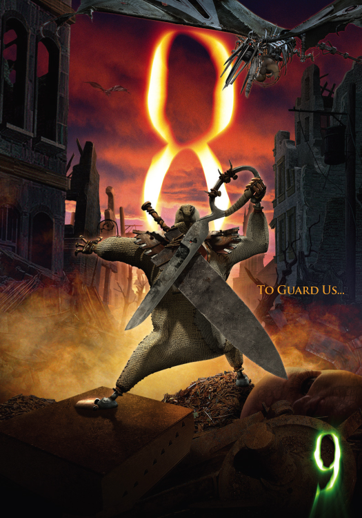

8 serves as 1's personal bodyguard and is voiced by Fred Tatasciore. In his time alone, he likes to get "high" off a magnet attached to his back.
8 is a bully to anyone who opposes or threatens 1. He is not the brightest of the bunch, but usually puts up a good fight when the others are in trouble.
8 is armed with a massive knife blade. He looks very similar to Oogie Boogie from Tim Burton's The Nightmare Before Christmas.
A classic meme of 8 from the fandom. 8 uses his magnet when no one is looking.

8 is always ready to defend 1 when he is threatened.